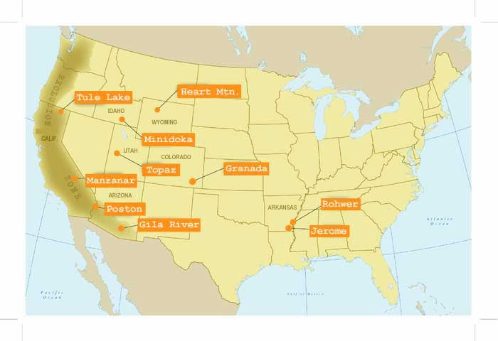

Assembly Centers and Internment Camp Maps
Assembly Centers
Built on top of existing sites such as “race tracks, fairgrounds, and other open areas surrounded by barbed wire” (Internment Camps), the Assembly Centers or “Relocation Centers” were used as a staging point for the transfer of interns to their assigned internment camps.

Internment Camps
The internment camps were the final destination until the end of World War II for many people, with the exception of those sent to Tule Lake, joined the 442nd Infantry Regiment, or got to continue college or university.
Sources:
National Park Service Camp MapsAssembly Camp Description
Continuing Education - Densho